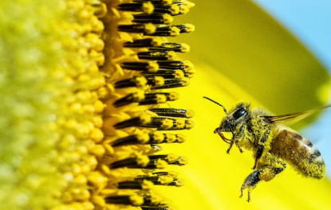
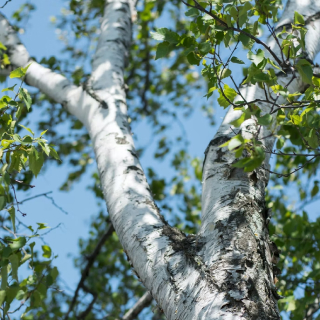
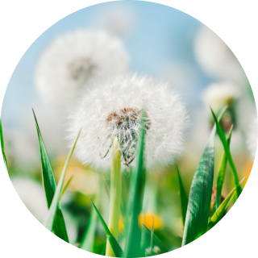
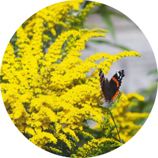

Алергія – один із найпоширеніших у світі розладів імунної системи, що проявляється підвищеною чутливістю у
відповідь
на
контакт із чужорідними для організму речовинами. Приблизно 10-30% населення світу страждає від алергічних
реакцій і
кількість таких осіб щорічно зростає. Алергенами, тобто речовинами, що провокують алергію, можуть бути певні
харчові
продукти, пилок, домашні тварини, побутова хімія, медичні препарати та інші чинники.
Сезонна алергія або поліноз
Сезонна алергія або поліноз (анг. Роllen – пилок) – це алергічне захворювання, яке викликане
рослинним пилком
і
характеризується гострими запальними змінами слизової оболонки дихальних шляхів та очей.
Це захворювання спостерігається у період цвітіння окремих рослин, має виражену сезонність. На сьогодні
відомо, що
полінозом хворіють 3-4 % людей земної кулі. Пилок - це у більшості білок, який розноситься вітром або
комахами на
великі
відстані. Тому полінозом хворіють як в місті, так і в сільській місцевості.

Пилок рослин
Пилок, який викликає поліноз має свої особливості:
має алергічні властивості;
належить до роду рослин, які широко розповсюджені у нашій країні;
має виражену летючість і продукується у значних кількостях, що створює досить високу концентрацію
його у
повітрі;
розмір зерен пилка діаметром 25 мкм-30 мкм, що проникає глибоко у дихальні шляхи і викликає
підвищену
чутливість.
В Україні спостерігають 3 періоди цвітіння:

Весняний
З початку березня до середини травня – пов’язаний здебільшого із цвітінням дерев: вільхи, берези,
ліщини,
дуба, ясеню,
граба, бузку;

Літній
Із середини травня до кінця липня, викликаний пилком лугових та злакових трав – тимофіївка, грястиця,
лихоцвіт, пирій,
пшениці, жита, вівса, кукурудзи, кульбаби;

Літньо-осінній
З середини липня до жовтня, зумовлений цвітінням бур'янів: полину, лободи, подорожника, кропиви,
амброзії.
Основні симптоми при сезонній алергії
Основними симптомами при сезонній алергії є: свербіж та почервоніння очей, відчуття піску в очах,
сльозотеча,
нежить,
напади чхання, утруднене носове дихання. За умови розвитку тяжкого перебігу полінозу до симптомів
алергічного
риніту та
кон'юнктивіту можуть приєднатись кашель, задуха, що є проявами бронхіальної астми, важкі проявишкірі по
типу
кропив'янки
чи ангіоневротичного набряку.
Пацієнт обов'язково повинен звернутись до лікаря а не самостійно приймати протиалергічні ліки.
Лікар, який поставив попередній діагноз, повинен скерувати хворого до алерголога для специфічного
обстеження,
метою
якого є не лише підтвердження попередньо виставленого діагнозу, але і виявлення конкретного специфічного
алергену,
який
викликав поліноз.
Специфічне алергообстеження включає збір алергоанамнезу, об’єктивне обстеження та алерготестування, що
передбачає
постановку шкірних проб або визначення специфічних антитіл до алергену у крові.
Першочергове лікування в період цвітіння полягає у зменшенні симптомів алергії. Основне ж лікування хворих
на
поліноз
проводиться у стадії ремісії лікарями-алергологами.
Профілактика
Специфічна алерговакцинація – лікування виявленими алергенами у малих дозах з поступовим
збільшенням,
завдяки якому
можна вилікувати алергію. Проводять упродовж декількох років підряд індивідуально підібраними курсами.
Рекомендації щодо профілактики загострення:
в сезон цвітіння обмежити перебування на повітрі, не відкривати вікон у машині;
після приходу з вулиці обов'язково миття рук, очей водою, носа - сольовими розчинами, або ще краще
приймати
душ
з миттям
волосся, весь одяг змінювати;
відчинені вікна завішувати вологими простирадлами, щоб стримувати пил, пилок;
щоденно проводити вологе прибирання вдома;
виключити із раціону харчування продукти, куди може входити пилок і ін. частини відповідних рослин;
носити сонцезахисні окуляри;
максимально відмовитись від використання хімічних засобів в побуті.